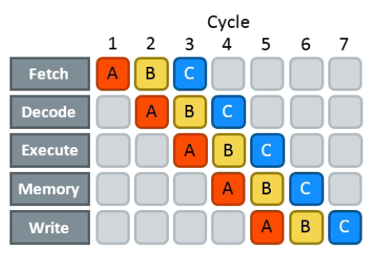
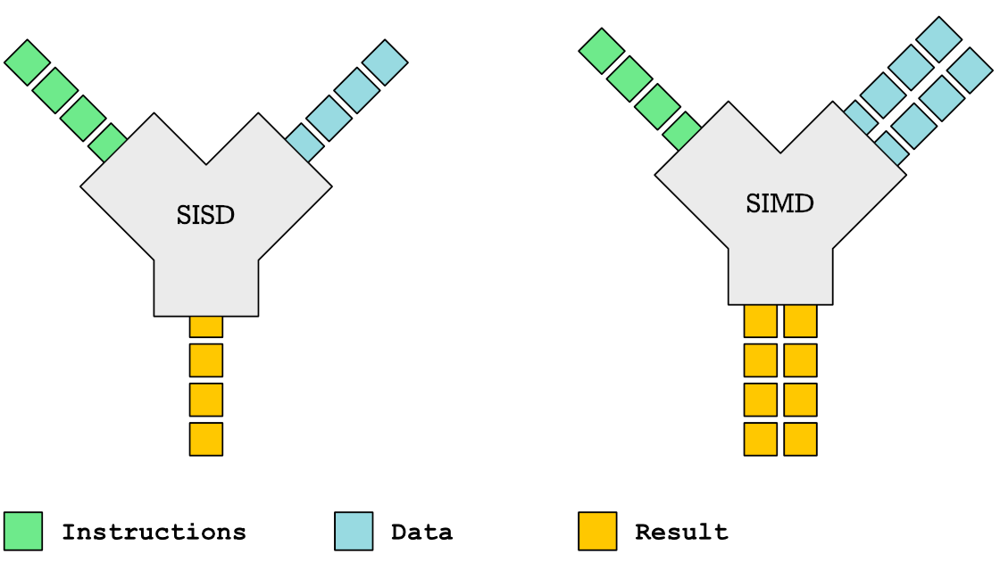
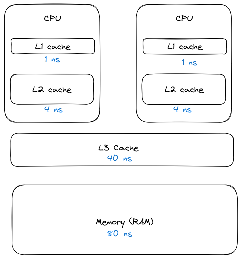

CPU
The secrets of the computer 🧠
Agenda
- How to get from source to machine code?
- How does the CPU execute machine code?
- What performance effects does this have?
- Profiling & Benchmarking thoughts & tips

Quiz
- If two CPUs have the same frequency, can we make assumptions on their speed?
- If two programs A and B execute the same number of machine instructions will they have roughly the same runtime?
Those are the questions we will be looking into in detail today. Here's the TL;DR:
- Answer no. Every instruction can take a different amount of cpu cycles. Every instruction can do a lot of different work (SIMD vs normal)
- Also no. Speed of a CPU largely relies on many many factors (#core, cache size, ...) The frequency also did not increase much over the years since CPUs get manufactured much smaller, causing heat issues with higher freqs.
Compilers
Steps to compile something:
- Lexer/Tokenizer (break code in tokens)
- Parser (build AST from code)
- High Level IR (build generic language from it)
- Low level IR (optimize and make it suitable for machines)
- Convert to actual target machine code
Fun fact: Supercompilers

- Compilers do not usually produce the best code and rely heavily on pattern matching, heuristics and just being smart. They can miss room for optimizations although this is rather rare in practice. (except Go, which is just a developing compiler)
- Super compilers brute force compilation (sometimes with benchmarks) until they found the best performing piece of code.
- Not used in practice, since freaking slow but helpful for developing new compiler optimizations.
As you will see in the rest of the workshop, 70% of optimization is to help the compiler make the right decisions.
How is code executed?

- Assembly: 1:1 human readable interpretation of machine code.
- Machine code: machine readable instructions (each instruction has an id)
- Assembler: Program that converts assembly to machine code.
Other terminology
- ISA: Instruction Set Architecture (x86, arm, ...)
- CISC Complex Instruction Set Computer (x86)
- RISC: Reduced Instruction Set Computer (arm)
- SIMD: Single Instruction, Multiple Data
- ISE: Instruction Set Extensions (AVX, AES, SSE...)
- Micro{architecture,code} (Pentium3, Alder Lake, Zen...)
Example of a CISC instruction set: x86 Today, most complex operations get translated to RISC code though by the CPU. CISC turned out to be slower, surprisingly.
RISC: ARM. Usually cheaper to build and also faster.
Microarchitecture: Implementation of a certain ISA.
ISE (Instruction Set Extensions) are not directly available in Go, only if the compiler decides to use them.
How is machine code stored?
As ELF (Executable and Linkable Format)
$ readelf --sections /usr/bin/ls [...] [12] .text PROGBITS [...] [22] .data PROGBITS $ objdump --disassemble /usr/bin/ls
Beside storing the actual instructions ELF solves:
- Storing debugging info
- Making it possible to link with existing other libraries.
- Includes a text (code) and data section (pre-initialized variables)
- Different OS use different formats, but ELF is probably the most relevant for you and also the most widely known. Windows has a different one.
Go Assembler #1
1 package main 2 3 //go:noinline 4 func add(a, b int) int { 5 return a + b 6 } 7 8 func main() { 9 add(2, 3) 10 }
The official Go compiler is not based on LLVM or GCC. However, it also uses a IR which it calls "Go assembler". It's basically an assembler like dialect for a fantasy CPU. After it was optimized, it gets translated to actual target machine code.
Go Assembler #2
$ go build -gcflags="-S" add.go [...] main.add STEXT nosplit size=4 [...] (test.go:4) TEXT main.add(SB), [...] (test.go:4) PCDATA $3, $1 (test.go:5) ADDQ BX, AX (test.go:5) RET [...] main.main STEXT size=121 [...] [...] (test.go:9) MOVL $2, AX (test.go:9) MOVL $3, BX (test.go:9) CALL main.add(SB) # result is in AX
Important: There are many assembler dialects for many ISA. This is a IR. Also Important: Explain registers!
Can we just say: To make things faster you have to reduce the number of instructions?
Sadly no. Modern CPUs are MUCH complexer than machines that sequentially execute instructions. They take all kind of shortcuts to execute things faster - most of the time. See also: Megaherz myth (-> higher clock = more cycles per time)
Effects that may play a role
- Not every instruction takes the same amount of cycles (MOV 1 cycle,
- Pipelining
- Superscalar Execution
- Branch prediction / Cache prefetching
- Out-of-order execution
- Cache misses (fetching from main memory)
List of typical cycles per instructions ("latency"): https://www.agner.org/optimize/instruction_tables.pdf
Von-Neumann Architecture

Von Neumann Computer: Memory contains data and code. CPU adresses memory as whole and can address I/O device the same way over a bus system.
Greatly simplified.
- Clocked with a certain frequency.
- A cycle is the basic work synchronization.
- Registers for internal usage. (CPUs have more than x86 says)
- Peripherals look to the CPU like memory.
Intel 8086 kinda worked this way.
Single instruction pipeline
- Load: Instruction gets loaded (0x012345)
- Decode: Check type/args of instruction.
- Memory: Load data from memory (if necessary)
- Execute: Calculate (e.g. add 2+3 in the ALU)
- Write back: Save result in some register.
This would need 5 cycles per instruction. You kinda assumed, that one cycle is one instruction, did you?
Pipelining, OoO, Superscalar, wtf?
- Pipelining: The 5 steps get done in parallel.
- Out-of-Order: Instructions get re-ordered.
- Superscalar: Several instructions per cycle (~5x)
Ergo:
- 1 Cycle ≠ 1 instruction.
- CPU might do unnecessary work!
- Reducing instructions alone does not get us far.
- Every instruction needs to do all 5 steps
- Modern CPUs can work on many instructions at the same time
- They can be also re-ordered by the CPU! (think of a queue that gets reordered)
- This can lead to issues when an instruction depends on results of another instructions! (branches!)
- It can even happen that we do unncessary work! This made the SPECTRE and MELTDOWN security issues possible that made cloud computing 20% slower over night.
- CPUs can also execute more than one instruction per cycle (e.g. one MOV, ADD, CMP, as they all use different parts of the CPU) (Superscalar CPUs)
- This is the reason why focussing on reducing the number of instructions alone is not too helpful when optimizing.
Disclaimer: CPU effects
- Modern CPUs are insanely complex (like humans).
- Compilers are insanely smart (unlike humans).
- This tandem is probably smarter than you and me. The following slides are mostly for educational purpose. Trust the compiler in 95% of the time.
- Still helpful to know what happens in the 5%.
Branch prediction
// NOTE: works only in C/C++ if(likely(a > 1)) { // ... } // Branch mis-prediction are very costly! // ~20 - ~35 cycles can be lost per miss. if(unlikely(err > 0)) { // ... }
Modern cpus guess what branch is taken due to pipelining. The accuracy is done to 96%, they even use neural networks for that.
No likely() in Go, compiler tries to insert those hints automayically. Not much of an important optimization nowadays though as CPUs get a lot better:
https://de.wikipedia.org/wiki/Sprungvorhersage
(but can be relevant for very hot paths on cheap ARM cpus)
Penalty Source: https://users.elis.ugent.be/~leeckhou/papers/ispass06-eyerman.pdf
Can we observe it?
// Which loop runs faster? for(int i = 0; i < N; i++) { if (unsorted[i] < X) { sum += unsorted[i]; } } for(int i = 0; i < N; i++) { if (sorted[i] < X) { sum += sorted[i]; } }
Example: code/branchpredict
Effect is unnotice-able if optimizations are enabled. Why? Compilers can make the inner branch a branchless statement.
Profile Guided Optimization

Idea:
- Let program run in analysis mode.
- Capture data about what branches were hit how often.
- Use this data on the next compile to decide which branch is likely!
Feature is available as part of Go 1.20 and since around 20 years as part of GCC/clang
Also decides on where to inline functions.
https://tip.golang.org/doc/pgo
Old news for languages like C.
Branchless programming
// Don't optimize this at home, kids. // Your compiler does this for you. uint32_t max(uint32_t a, uint32_t b) { if(a > b) { return a; } return b; }
// variant 1; not possible in Go: return (a > b) * a + !(a > b) * b; // variant 2; possible in Go: return a - (a - b)
Not relevant, as the compiler will optimize this for you in most cases by using branchless code.
It can be however a life safer in hot loops if the compiler does not know. Always check the assembly output if unsure.
Loop unrolling and ILP
ILP = Instruction Level Parallelism
// a loop is just a repeated if condition: for idx := 0; idx < 3; idx++ { sum += sin(idx) } // same, but no "idx < 3" needed: // (can be computed in parallel!) sum += sin(0) sum += sin(1) sum += sin(2)
- A for loop is just a repeated branch condition.
- Compilers unroll simple loops.
- If they don't hand unrolling can be useful (very seldom!)
Example with interdependent code will not work as good:
v := 1234 for v > 0 { digit := v % 10 v /= 10 }
Just use less instructions?
// How to reduce the number of instructions? char *memcpy_basic(char *dst, char *src, size_t n) { for(size_t i = 0; i < n; i++) { dst[i] = src[i]; } return dst; }
Example: code/memcpy
-> Problem: von-Neumann-Bottleneck. -> CPU can work on data faster than typical RAM can deliver it. -> Workaround: Caches in the CPU, Prefetching. -> Actual solution: Data oriented design. -> Sequential access, tight packing of data, SIMD (and if you're crazy: DMA) -> Still best way to speed up copies: don't copy.
Object oriented design tends to fuck this up and many Games (at their core) do not use OOP. You can use both at the same time though!
SIMD
https://github.com/mmcloughlin/avo
SISD = Single Instruction / Single Data SIMD = Single Instruction / Multiple Data
Can be really worth the effort, since compilers can't figure out all cases where SIMD can be used.
Example use cases:
- Image computation (i.e. changing brightness of several pixels at once)
- Math operations like vector / matrix multiplications.
- Audio/DSP processing.
Disadvantage: Code gets ugly, hard to maintain and has additional obstacles to solve like memory alignment. Also freaking complicated, which is why we won't go into detail. Read up more here if you really want to:
https://en.wikipedia.org/wiki/Single_instruction,_multiple_data
Optimization: Inlining

Inlining functions can speed up things at the cost of increased ELF size.
Advantage: Parameters do not need to get copied, but CPU can re-use whatever is in the registers alreadys. Also return values do not need to be copied.
Only done for small functions and only in hot paths.
I like to MOV, MOV it
# General syntax: # MOV <dst>,<src> # Possible: MOV reg1, 1234 MOV reg1, reg2 MOV reg1, [1234] MOV [1234], reg1 MOV [reg2], reg1 # Not possible: MOV [1234], [4321]
How does access to main memory work? By using the MOV instruction. And MOV from main memory is very costly: Access to main memory is 125ns, L1 cache is ~1ns
Fun fact: MOV alone is Turing complete: https://github.com/xoreaxeaxeax/movfuscator
TODO: Move this slide a bit before cache lines?
von Neumann Bottleneck
von Neumann Architektur:
- Computer Architecture where there is common memory accessible by all cores
- Memory contains Data as well as code instructions
- All data/code goes over a common bus
- Pretty much all computer nowadays are build this way
Bottleneck: Memory acess is much slower than CPUs can process the data.
Just add some caches!
Good example of our industry really.
Instead of fixing an issue we wrap layers aorund it until we just don't see the problem. But we never fix it.
L1, L2, L3
Cache lines (64B)

Minimal line size is 64 byte! It can only be written and evicted as one. No partial reads or writes possible. (Reason: adress space would be too big otherwise)
Some platforms have different cache lines and future CPUs might change too. So instead on relying on the magic 64 you should use some const or cpu.CacheLinePad.
Caches misses
Example: code/counter (1-3)
# Use this to check your cache miss count: $ perf stat -p <PID>
https://access.redhat.com/documentation/en-us/red_hat_enterprise_linux/8/html/monitoring_and_managing_system_status_and_performance/getting-started-with-perf_monitoring-and-managing-system-status-and-performance https://access.redhat.com/documentation/en-us/red_hat_enterprise_linux/8/html/monitoring_and_managing_system_status_and_performance/overview-of-performance-monitoring-options_monitoring-and-managing-system-status-and-performance
(Struct) size matters!
// Quiz: How big is this struct? type XXX struct { A int64 B uint32 C byte D bool E string F []byte G map[string]int64 H interface{} I int }
What's padding?
x := XXX{} // measured with Go 1.20! s := unsafe.Sizeof // println(s(x.A)) // 8 int64 println(s(x.B)) // 4 uint32 println(s(x.C)) // 1 byte println(s(x.D)) // 1 bool // +2 padding println(s(x.E)) // 16 string (ptr+len) println(s(x.F)) // 24 slice (ptr+len+cap) println(s(x.G)) // 8 map (ptr) println(s(x.H)) // 16 iface (ptr+typ) println(s(x.I)) // 8 int // Sum: 86 println(s(x)) // 88 (not 86!)
If a struct is bigger than a cache line, then accessing .A and .I would cause the CPU to always require to get a new cache line!
Keep your structures under 64 bytes at max. Even less is better, aim to stay under 32 byte.
Some more background info regarding why the value needs to be padded can be found here (i.e. instructions require proper alignment):
var data [100]XXX for _, elem := range data { // 100 cache misses (at least)! fmt.Println(elem.A, elem.I) }
# How big is a cache line? $ lscpu --caches
Good article with a slightly different (and more realworld) example:
https://www.ardanlabs.com/blog/2023/07/getting-friendly-with-cpu-caches.html
(Binary) size matters!
- More debug symbols, functions, lookup tables and instructions make the binary bigger.
- A process needs at least as much memory as the binary size (Caveat: only the first one)
- The bigger the binary, the longer the startup time. Important for shortlived processes/bootup (scripts!)
- CPUs have separate caches for code instructions. If your program is so fat that that the caches get evicted while jumping between two functions, then you pay with performance.
»Yo binary is so fat, you see it on Google Earth! 🌍«
Binaries can be compressed with UPX, but that does make start up time faster - contrary to that.
Also, in the embedded world the binary size is way more important, but 30M binaries seem excessive even on servers. Go is doing a bad job here while Rust produces tiny outputs.

Detour: perf command
# Like `time` but much better. $ perf stat -a <command> $ perf stat -a -p <PID> # See where the system spends time now: $ perf top # Detailed report about memory access / misses $ perf mem record -a ./counter atomic $ perf mem -t load report --sort=mem # Can find false sharing (see next chapter) $ perf c2c
Detour: pprof
# simple: $ go test -v -cpuprofile=cpu.pprof -memprofile=mem.pprof $ go tool pprof ./cpu.pprof
// permanently: import _ "net/http/pprof" go http.ListenAndServe("localhost:3000", nil)
$ go tool pprof localhost:3000/debug/pprof/profile $ go tool pprof localhost:3000/debug/pprof/heap
Profile of firmware's telemetry service
{kind=link}
Look at images/dashboard_pprof.svg here.
Pprof is also available for Python, but not as well integrated: https://github.com/timpalpant/pypprof
Detour: Flame graphs

f, _ := os.Create("/tmp/cpu.pprof") pprof.StartCPUProfile(f) defer pprof.StopCPUProfile()
$ go tool pprof -http=":8000" <binary> /tmp/cpu.prof
Alternative for short lived programs: make pprof record a profile.
See images/brig_flamegraph.png See images/brig_flamegraph.html
Perfect to see what time is spend in in what symbol. Available for:
- CPU
- Memory Allocations (although I like pprof more here)
- Off-CPU (i.e. I/O)
False sharing
- Problem: Unrelated data in the same cache line gets modified and thus cache line gets evicted.
- Solution: Add some padding!
Example code/counter (4)
If a program modifies data, the responding cache line needs to be evicted (unless the modification resulted from the currently running program). This is called "cache eviction" in short.
If it happens because the data in the cache line was actually changed, then all is good. Data needs to be fetched again from memory which costs a bit of time.
But what if two data points just happen to be in the same cache line? Imagine two int64 counters that get incremented by two separate threads. They do not talk to each other and should be influenced by each other. However, each increment evicts the cache line and causes a slowdown. We can use padding to force each counter into a separate cache line.
True sharing
- Situation: Closely related data lands in the same cache line.
- Effect: Less jumping, less memory loads, higher throughput.
- Trick: Structs < 64 byte and being cache friendly.
Example: code/striding
This is when the idea of introducing caches between CPU and memory works out. Good news: Can be controlled by:
- Limiting struct sizes to 64 bytes
- Grouping often accessed data together. (arrays of data, not array of structs of data)
A bad example of this are linked lists. The next node is usually somewhere else in memory and the size of a single node is below 64 bytes. This results in cache lines that are mostly loaded for no reason. One solution would be to design cache-friendly linked list by packing more data into the node itself.
Typical Access patterns

Learning: Group data in a CPU friendly way. Prefer Struct of Arrays over Array of Structs if you require a performance boost.
AoS vs SoA
var AoS []struct{ // ArrayOfStructures A int B int } var SoA struct{ // StructureOfArrays A []int B []int }

Dataoriented programming
The science of designing programs in a CPU friendly way.

DOP is often mentioned as contrast to OOP, but both concepts can complement each other.
Object oriented program is designing the program in a way that is friendly to humans.
It does by encapsulating data and methods together. By coincidence, this is not exactly helpful to the machine your program runs on. Why?
- global state (i.e. impure functions) make branch/cache predictions way harder.
- hurts cache locality.
Quiz: Matrix Traversal
int *m = malloc(N_ROWS * N_COLS * sizeof(int));

Example: code/matrix
What is faster? Traversing m...
- ...row by row?
- ...column by column?
Good picture source: https://medium.com/mirum-budapest/introduction-to-data-oriented-programming-85b51b99572d
Recursion vs Iteration
- Recursion is elegant but can be expensive.
- Make the recursive call the last thing in your function.
- (»Tailcall optimization«)
BenchmarkSum/normal 286.7 ns/op BenchmarkSum/tailcall 242.1 ns/op BenchmarkSum/iterative 71.1 ns/op
Example: code/tailcall
Recursive algorithms like quicksort or merge sort are relatively elegant when writing as recursive function. Sadly, this results in some performance impact.
Why? Because function call have a certain overhead, as we will see in the next chapter. This function overhead can be reduced if we place the recursive function call at the end of the function. This allows a smart compiler to save some instructions. An even smarter compiler (clang or gcc) might even able to convert the recursion function into its iterative equivalent.
This is called "Tail call optimization": https://de.wikipedia.org/wiki/Endrekursion
Virtual funcs & Interfaces

Example: code/cost_of_interface
Interface calls have between 2x to 10x as much overhead as direct calls in Go.
Interfaces also have a space cost. A variable of type interface is basically a pointer with 16 byte (Space!). It consists of two actual pointers: type (pointing to a struct describing the type for reflection) and a pointer to the actual data the interface points to. This is one indirection more, one more cycle for the GC.
Also, interfaces are opaque to the compiler. It cannot reason about what they could do, so they can not use inlining or do proper escape analysis and instead allocate on the heap always.
More info: https://syslog.ravelin.com/go-interfaces-but-at-what-cost-961e0f58a07b
Now you could say: Ah, I don't use Go, all good. Well, pretty much all languages that support OOP are affected by this kind of behaviour. Virtual methods in C++ or Java have their price too: They need to lookup a vtable, which adds some more instructions but most importantly hinders the compiler to optimize further.
Since especially Java uses Getters and Setters a lot - which are just one-line functions in most cases - they pay quite a penalty regarding performance.
Python is especially wild, since they just might do tons of dictionary lookups if you use classes with a lot of inheritance.
Boundcheck Elimination
Help the compiler!
Example: code/boundscheck
In a memory-safe language all access to slices are checked (and if out-of-bound, an language panic/exception is produced)
This is a very small price to pay for the safety, but it costs a few instructions.
More infos can be found here: https://go101.org/article/bounds-check-elimination.html
Process scheduler
Context switch:
- Before execution: Load register state from RAM.
- After execution: Store register state in RAM.

We're not alone on a system. Every process get assigned a share of time that it may execute.
-> Expensive. Switching too often is expensive.
- scheduler types (O(n), O(1), CFS, BFS)
- scheduler is determined at compile time.
- there are some knobs to tune the scheduler, but not that interesting.
- Show process states with ps a.
Process load
Load: Count of processes currently in running or waiting state.
\(load_{now} = \begin{cases}N_{count} = 0\:\:\:\:\:\:\:\:\:\iff\textrm{Idle}\\N_{count} < N_{cores}\iff\textrm{Normal}\\N_{count}\ge N_{cores}\iff\textrm{Overload}\end{cases}\)
The load metric makes most sense if averaged over some time.
Those are the load5/load10/load15 params. Use load5 for graphs, load15 for quick judgmenet.
You can use the "uptime" command to check the load.
Process niceness
Niceness is the scheduling priority.
- Ranges from \(-20\) to \(+19\); \(0\) is default.
- \(-20\) gives the process more time to execute.
- \(+19\) gives the process way less to execute.
# for new processes: sleep with high prio $ nice -n -20 sleep 5s # for running processes: change to unimportant $ renice -n +19 $(pgrep docker)
Disclaimer: Exact behaviour depends on scheduler (scheduling frequency vs time slice size)
Rough Rules to take away
- Watch out for cache misses.
- Keep your structs small (< 64B).
- Check if you need padding (false sharing).
- Place often accessed data close (true sharing).
- Design your access patterns cache friendly.
- Avoid virtual methods and inheritance.
- Do not overuse pointers over values.
- Trust your compiler, but check what it did.
- Use SIMD if you have to; or leave it to others.
Go even warns about too structures (if they are used as values): gocritic hugeParam: cfg is heavy (240 bytes); consider passing it by pointer
A good and very quick summary is also in this article (although you need background info to understand the tips):
https://medium.com/scum-gazeta/golang-simple-optimization-notes-70bc64673980
Fynn!
🏁